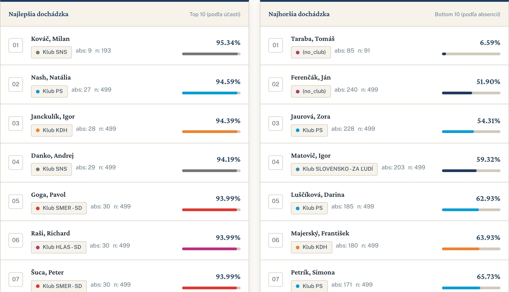
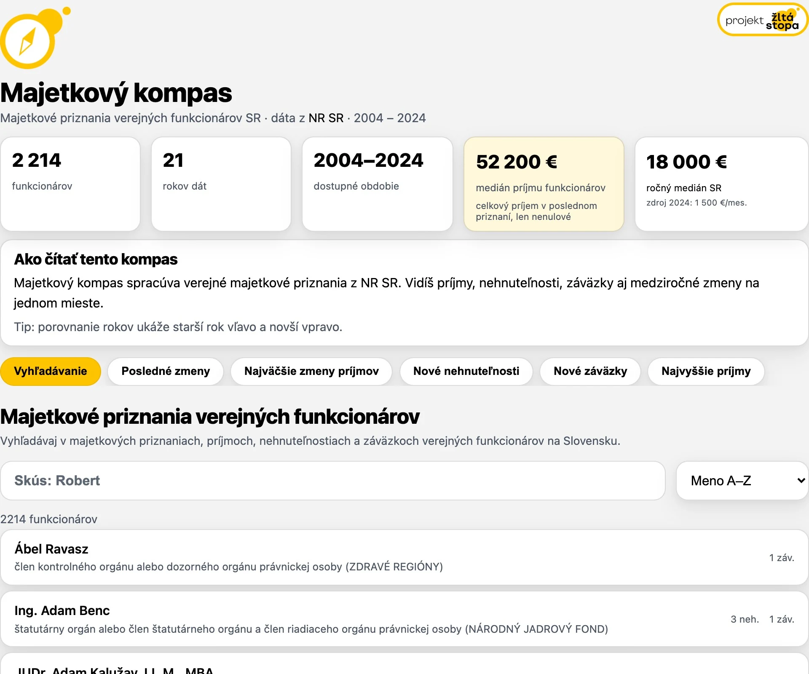
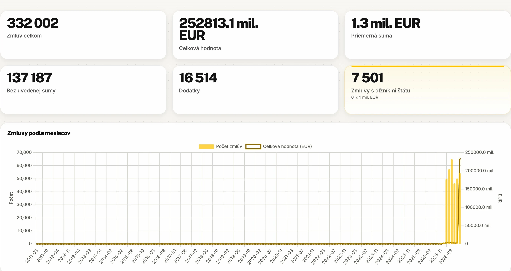

Na čo míňa štát?
Štátna kasa ako jedna stovka. Pozri, kam idú peniaze a ako sa to mení v čase.
Rok 2027 je čiastočne odhad.
Štátna kasa ako jedna stovka. Pozri, kam idú peniaze a ako sa to mení v čase.
Rok 2027 je čiastočne odhad.
Ako ďaleko je z tvojej obce do potravín? Pešo aj autobusom.
Modelovaná dostupnosť.
Starne náš parlament? Vek poslancov od roku 1994 v grafoch.

Kto hlasuje a kto chýba? Účasť poslancov na hlasovaniach.

Príjmy, nehnuteľnosti a zmeny v majetkových priznaniach verejných funkcionárov.

Verejné zmluvy, dodávatelia a ich prepojenia. Nástroj na podrobnejšie pátranie.
Tvoríš niečo z verejných dát o Slovensku? Ukáž nám svoj projekt. Alebo nápad, ktorý ešte len vzniká.
Pridaj sa na DiscordPre investigatívnych novinárov, analytikov aj občianske iniciatívy. Skills pre AI agentov, ktoré pomáhajú prepojiť zmluvy, firmy a verejné registre.
Otvoriť toolkit